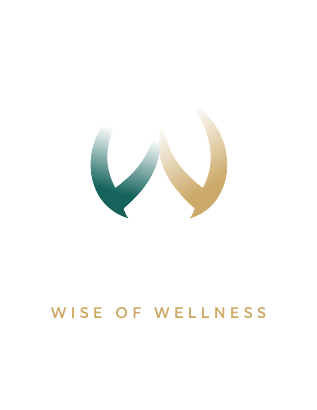
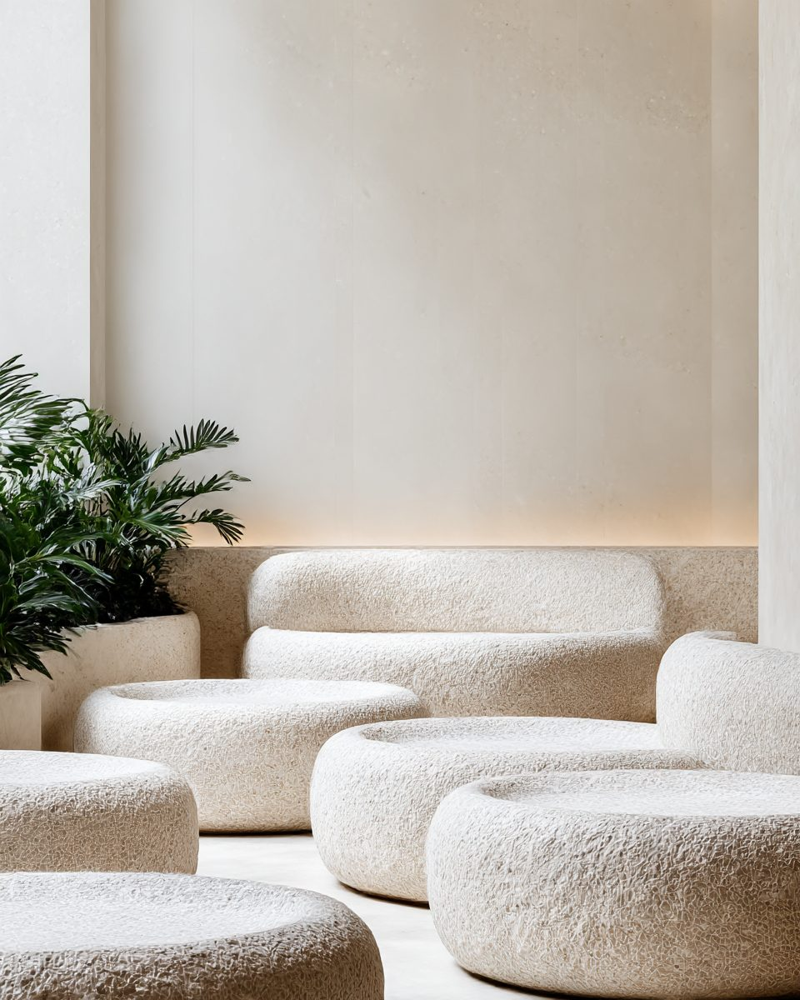
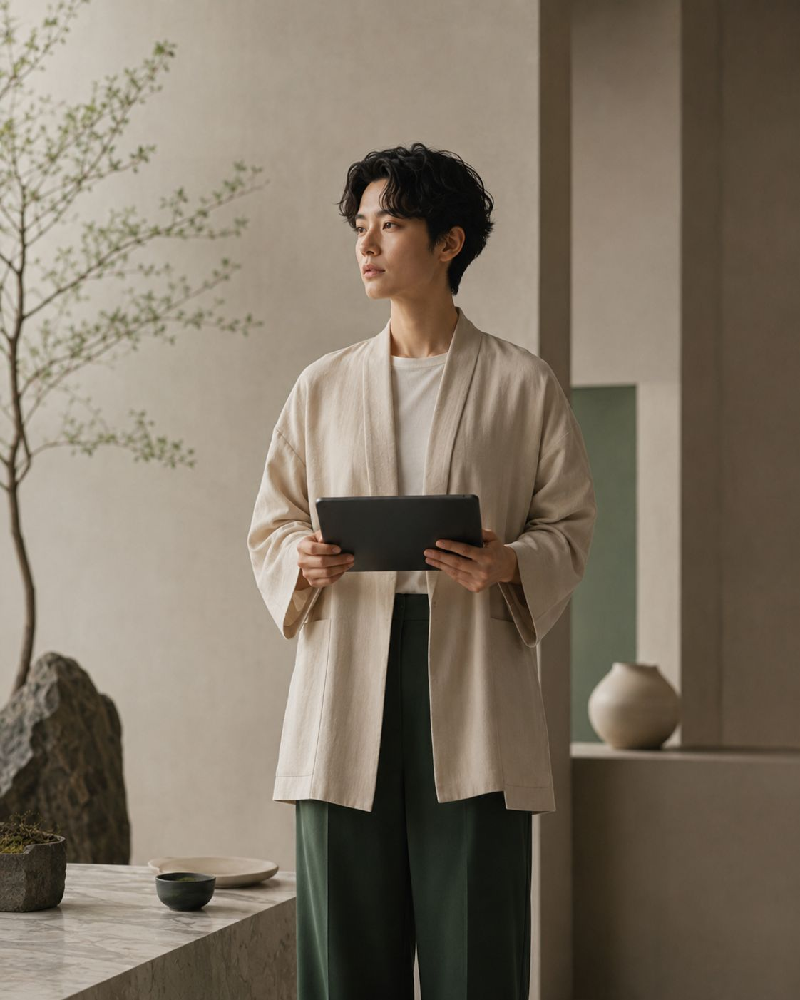
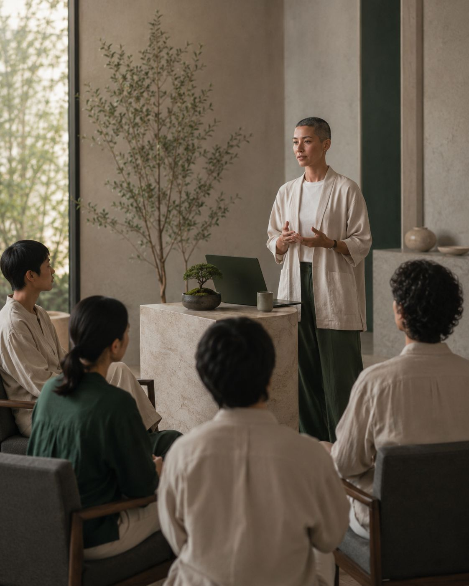

Passport
Wellness intelligence that guides growth
ผลการศึกษานำร่องของระบบทบทวนหลักฐานและสมรรถนะเชิงพัฒนา สำหรับบุคลากรสปา
เลื่อนลง↓

ผลการศึกษานำร่องของระบบทบทวนหลักฐานและสมรรถนะเชิงพัฒนา สำหรับบุคลากรสปา
เก็บหลักฐานจาก 3 แหล่ง แล้วประมวลเป็นภาพความพร้อมและทิศทางการเรียนรู้ (learning direction) ของแต่ละคนและของทีม
ไม่ใช่ข้อสรุปขั้นสุดท้าย แต่เป็นการสะท้อนเชิงพัฒนา ที่ทั้งพนักงาน องค์กร และ HR เข้าใจร่วมกัน
เอกสาร ใบอนุญาต และใบรับรอง — หลักฐานที่จับต้องได้ ตรวจการมีอยู่ด้วย OCR แม้สแกนรวมไฟล์
ตัวอย่างเสียงการแนะนำตัวและตอบคำถาม เพื่อสังเกตการสื่อสารและความพร้อมภาษาอังกฤษเชิงบริการ
มุมมองและเป้าหมายที่เจ้าตัวสะท้อนเอง ประกอบการอ่านบริบทของแต่ละคน

AI ช่วยจัดเรียงและประเมินความเกี่ยวข้องได้ถึงขั้น 3 — ขั้นสูงกว่านั้นรอการยืนยันโดยคน (needs confirmation) ในนำร่องนี้หลักฐานส่วนใหญ่อยู่ที่ขั้น “AI Relevant” พร้อมเข้าสู่การทบทวน
ความโปร่งใสนี้ทำให้เห็นชัดว่า อะไรพร้อมแล้ว และอะไร “ยังต้องการการยืนยัน” ก่อนนำไปใช้ตัดสินใจ


Training needs ของทีม (ภาษาอังกฤษเป็นธีมหลัก) · Leadership pipeline · ข้อเสนอแนะการพัฒนารายบุคคล
เครื่องมือปฏิบัติการ — ทบทวนหลักฐานทีละชิ้น เลื่อนระดับ Trust Pathway รีวิวเสียง และจัดการฐานข้อมูลผู้ออกเอกสาร
ประเมินความพร้อมทั้งทีมก่อนเปิด/ขยายสาขา ลดความเสี่ยงด้านคนตั้งแต่ต้น
ระบุผู้มีศักยภาพและ training need ได้เร็ว ลงทุนพัฒนาแบบตรงจุด
โดยเฉพาะความพร้อมภาษาอังกฤษเชิงบริการ ระดับแบรนด์
เปิดดู Dashboard จริงทั้ง 4 มุมมอง — ข้อมูลจาก pilot รุ่นแรก